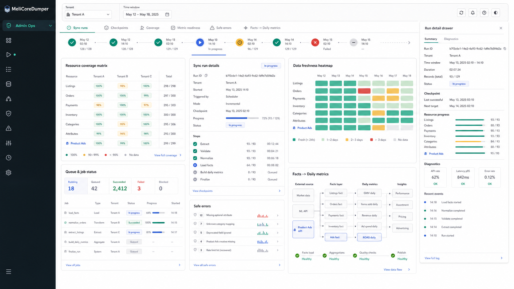
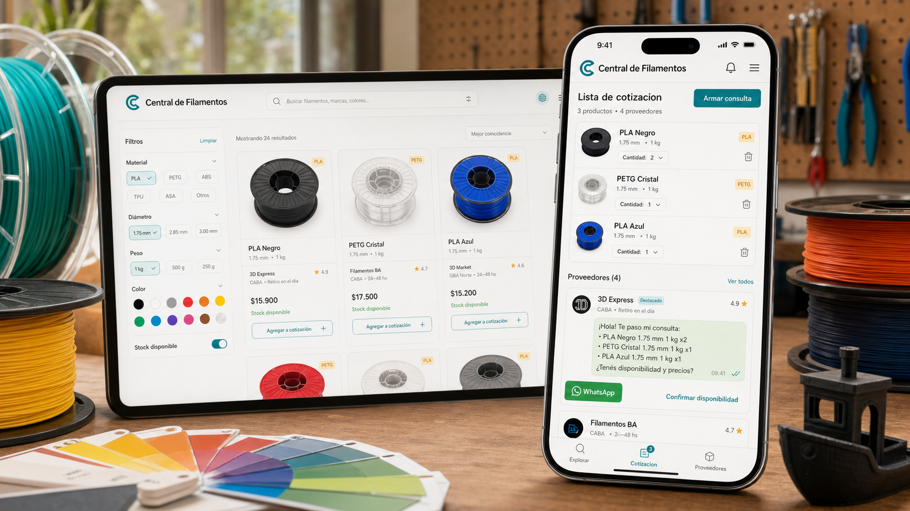
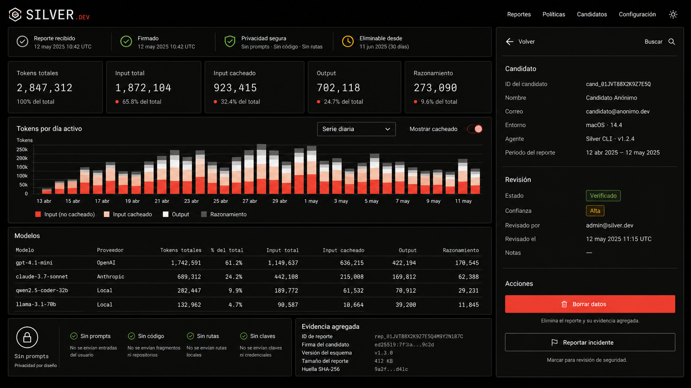
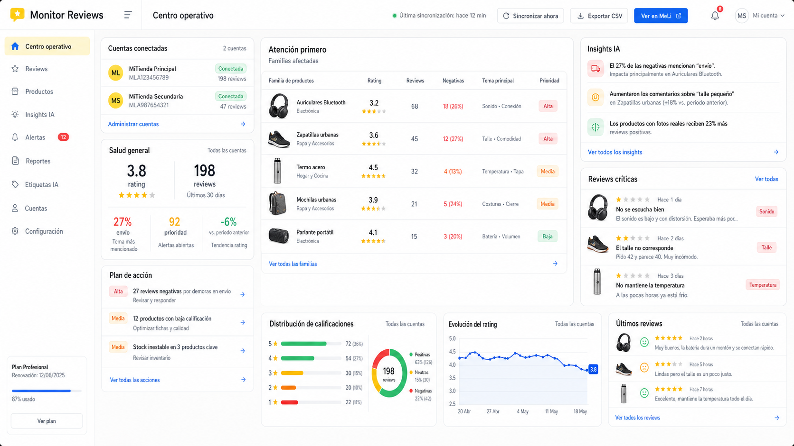

Producto × Ingeniería
Portfolio / 2026
Problemas reales. Productos que operan.
Diseño y construyo herramientas donde datos, APIs y decisiones de producto tienen que convivir.
Explorar los expedientesUna forma de trabajar
Del ruido inicial a un sistema que queda funcionando.
- 01Detectarla fricción
- 02Diseñarla apuesta
- 03Construirel sistema
- 04Operarel producto
Trabajo seleccionado / 01–04
Cuatro fricciones convertidas en producto.
Cada expediente conecta el contexto, la decisión y la ingeniería que permitió dejar algo útil en pie.
Meli Core Dumper
De exportar datos a producir inteligencia dentro del producto.

02Stock Central
Jobs como backend. GitHub Pages como runtime.

03Silver Usage Report
Privacidad convertida en una decisión de arquitectura.

04Monitor de Reviews
Una grieta concreta en la operación de sellers.

Criterio de trabajo
Producto para decidir.
Ingeniería para sostenerlo.
Me interesan los sistemas que nacen de una necesidad concreta, hacen explícitas sus decisiones y siguen siendo operables después del deploy.
Ver trabajo en GitHub